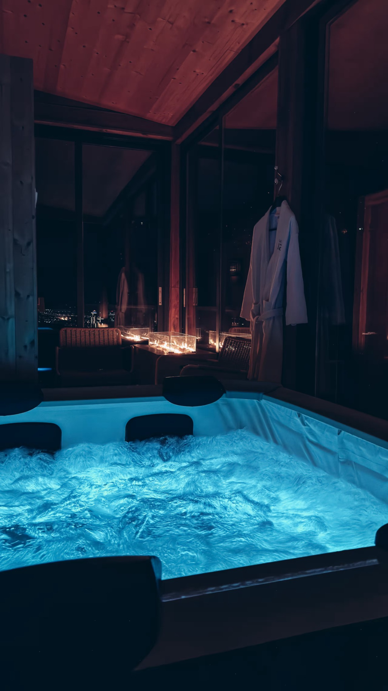
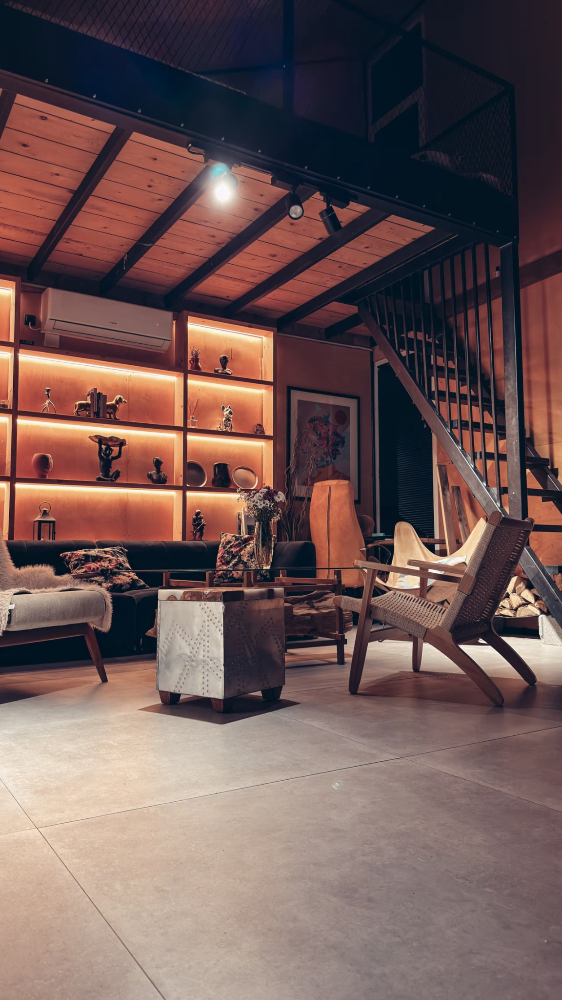
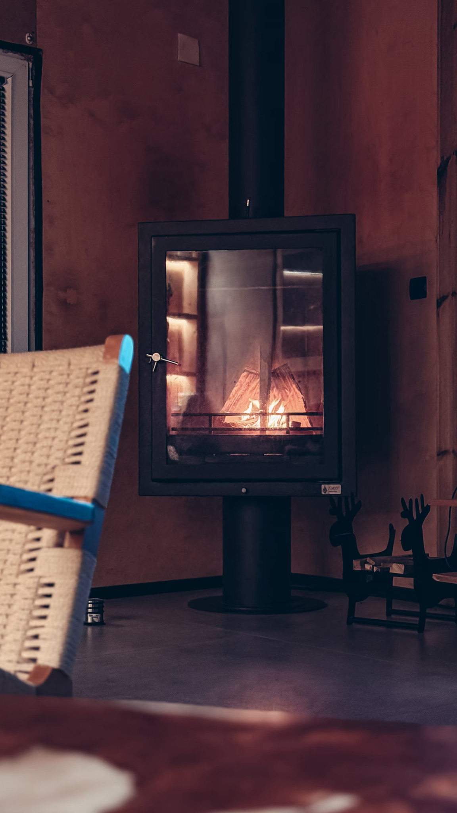
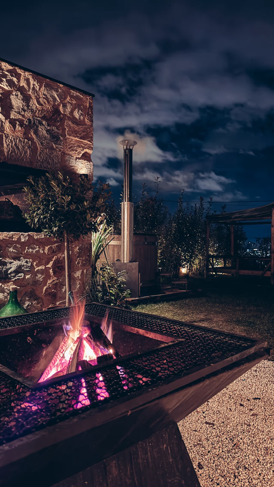
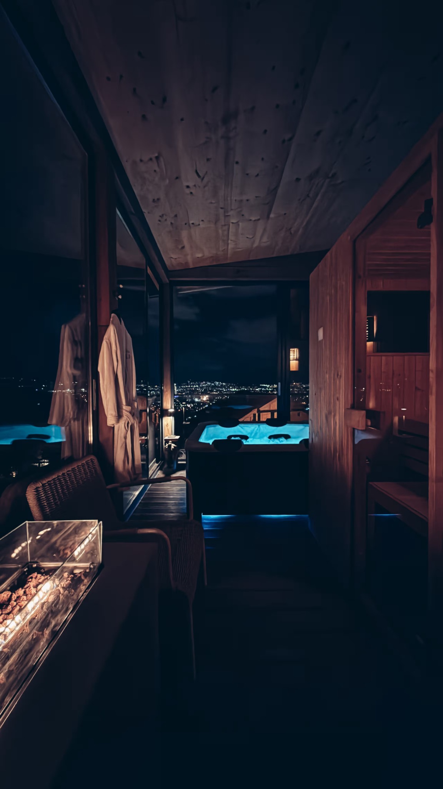
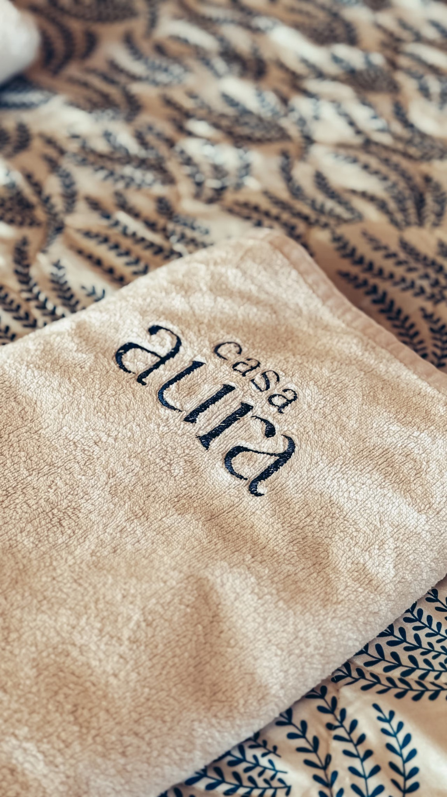

29
DI · DEZTouchdown & Balkan Welcome
15:00 Memmingen → 17:00 Skopje. Villa beziehen, kurz Whirlpool, danach Debar Maalo: großer Tisch, mazedonisches Essen, Wein und Rakija. Genau richtig, um anzukommen.
✈️ 15:00 → 17:00♨️ First Dip🥃 Rakija🥩 Kafana
Du hast den Teaser gesehen.
Jetzt fehlt nur noch der Code.
Nicht einfach Silvester. Fünf Nächte zwischen Private Spa Villa, Balkan-Nächten, Canyon, Offroad und Schnee.
Unsere Basis ist Casa Aura, eine private Designvilla über Skopje. Oben: Sauna und Whirlpool mit Blick über die Stadt. Innen: Pool und ein zweiter Whirlpool. Dazu Kamin, Feuerstelle und genug Platz, um zwischen den Ausflügen wirklich Urlaub zu machen.




15:00 Memmingen → 17:00 Skopje. Villa beziehen, kurz Whirlpool, danach Debar Maalo: großer Tisch, mazedonisches Essen, Wein und Rakija. Genau richtig, um anzukommen.
Vormittags das echte Skopje: Stone Bridge, Old Bazaar, Burek und Kaffee. Nachmittags 1,5–2 Stunden ATV/Offroad rund um Skopje. Danach zurück in die Villa: Sauna, Whirlpool, Essen bestellen, Feuer an.
Gemütlicher Vormittag, dann Matka Canyon: Winterlandschaft, kurzer Walk und – wenn Wetter/Betrieb passen – Boot. Ab 16 Uhr zurück: Sauna, Whirlpool, Drinks, fertig machen. Dann beginnt die eigentliche Mission.
Kein Wecker. Großes Frühstück. Pool, Sauna, Whirlpool, Couch, Musik. Später Kateressen in der Stadt und abends wieder zurück ins Haus. Der Tag ist nicht „leer“ – er ist Luxus.

Privater Fahrer holt uns an der Villa ab. Rund 1,5 Stunden Richtung Mavrovo: Schnee, Ski/Snowboard oder – falls buchbar – Snowmobile/Winter-Offroad. Berghütte, Essen, Rückfahrt. Danach Sauna & Whirlpool als Finale.
Früher Transfer zum Flughafen. 07:00 Skopje → 09:10 Memmingen. Schlafen können wir im Flugzeug.

Nicht steif. Nicht 7-Gänge-Hotelmenü. Ein echter Balkan-Abend: große Kafana, Live-Musik, voller Tisch, Rakija, Wein – und danach Countdown & Nachtleben.
Mazedonischer Abend zum Teilen. Dazu Rakija und lokaler Rotwein. Genau das ist der Punkt.
Villa mit Spa. Balkan-Nacht. ATV. Canyon. Schnee. Und wir vier. Viel überzeugender wird's nicht.
* Matka-Boot, ATV und mögliche Snowmobile-Aktivitäten sind wetter- und anbieterabhängig und müssen näher am Termin bestätigt werden. Das offizielle Skopje-NYE-Programm 2026/27 ist derzeit noch nicht final veröffentlicht. Casa Aura laut Unterkunftsbeschreibung nicht für Partys geeignet – Hauszeit daher entspannt, nicht als Party-Location geplant. Bildquellen Aktivitäten: North Macedonia Timeless / Mavrovo, öffentliche Webbilder zu Skopje & Matka; Casa-Aura-Bilder wurden für diese Reise bereitgestellt.